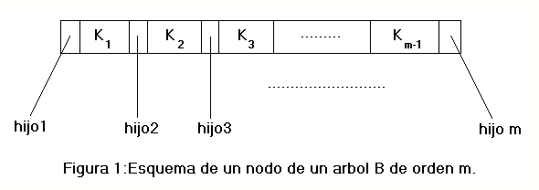
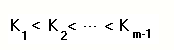
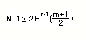
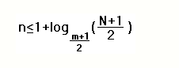

Los B-árboles son árboles cuyos nodos pueden tener un número múltiple de hijos tal como muestra el esquema de uno de ellos en la figura 1.
Figura 1.

Como se puede observar en la figura 1,un B-árbol se dice que es de orden m si sus nodos pueden contener hasta un máximo de m hijos.En la literatura también aparece que si un árbol es de orden m significa que el mínimo número de hijos que puede tener es m+1(m claves).Nosotros no la usaremos para diferenciar el caso de un número máximo par e impar de claves en un nodo.
El conjunto de claves que se sitúan en un nodo cumplen la condición:

de forma que los elementos que cuelgan del primer hijo tienen una clave con valor menor que K1,los que cuelgan del segundo tienen una clave con valor mayor que K1 y menor que K2,etc...Obviamente,los que cuelgan del último hijo tienen una clave con valor mayor que la última clave(hay que tener en cuenta que el nodo puede tener menos de m hijos y por consiguiente menos de m-1 claves).
Para que un árbol sea B-árbol además deberá cumplir lo siguiente:
- Todos los nodos excepto la raíz tienen al menos E((m-1)/2) claves.Lógicamente para los nodos interiores eso implica que tienen al menos E((m+1)/2) hijos.
- Todas las hojas están en el mismo nivel.
El hecho de que la raíz pueda tener menos descendientes se debe a que si el crecimiento del árbol hace que la raíz se divida en dos hay que permitir dicha situación para que los nuevos nodos mantengan esa propiedad.En el caso de que eso ocurra en un nodo interior distinto a la raíz se soluciona propagando hacia arriba;lógicamente esta operación no se puede realizar en el caso de raíz.
Por otro lado,con el hecho de que los nodos interiores tengan un número mínimo de descendientes aseguramos que en el nivel n(nivel 1 corresponde a la raíz)haya un mínimo de 2En-1((m+1)/2)(el 2 es el mínimo de hijos de la raíz y E((m+1)/2) el mínimo para los demás)y teniendo en cuenta que un árbol con N claves tiene N+1 descendientes en el nivel de las hojas,podemos establecer la siguiente desigualdad:

Resolviendo:

que nos da una cota superior del número de nodos a recorrer para localizar un elemento en el árbol.